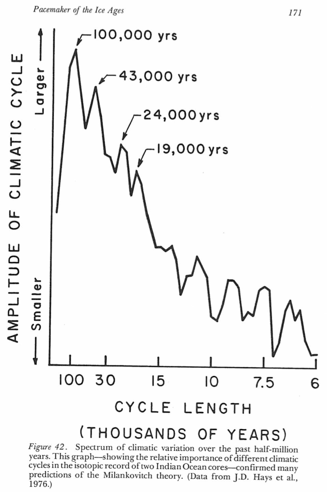

19. Orbital variations, insolation, and the ice ages#
This notebook is part of The Climate Laboratory by Brian E. J. Rose, University at Albany.
%matplotlib inline
import numpy as np
import matplotlib.pyplot as plt
from climlab import constants as const
19.1. 1. The ice ages#
Recent Earth history (past few million years) has been dominated by the repeated growth and retreat of large continental ice sheets, mostly over the land masses of the Northern Hemisphere.
19.1.1. Extent of glaciation#
The images below show typical maximum extents of the ice sheets during recent glaciations (grey) compared with present-day ice sheets (black)


Hannes Grobe/AWI, http://commons.wikimedia.org/wiki/File:Iceage_north-intergl_glac_hg.png
19.1.2. Pacing of ice ages: evidence from ocean sediments#
The figure below shows a global record of oxygen isotopes recorded in the shells of marine organisms. This record tells us primarily about variations in global ice volume – because the net evaporation of water from the oceans to build up the ice sheets leaves the oceans enriched in heavier isotopes.
The x axis is plotted in Thousands of years before present (present-day is at zero on the left).
{kind=link}
Lisiecki, L. E. and Raymo, M. E. (2005). A Pliocene-Pleistocene stack of 57 globally distributed benthic δ18O records. Paleoceanog., 20.
The ice ages (times of extensive glaciation and high ocean \(\delta^{18}\)O) do not seem to be random fluctations. They have come and gone (approximately) periodically, somewhat like the seasons.
Spectral analysis of such records reveals peaks at some special frequencies:
{kind=link}
Imbrie, J. and Imbrie, K. P. (1986). Ice Ages: Solving the Mystery. Harvard University Press, Cambridge, Massachusetts.
The peaks noted on this figure are special because they correspond to frequencies of variations in Earth’s orbital parameters, as we will see.
These kind of results became available in the 1970’s for the first time, because ocean sediment cores allowed a sufficiently detailed look into the past to use time series analysis methods on them, e.g. to compute spectra.
The presence of peaks in the spectrum at orbital frequencies was seen as convincing evidence that the so-called astronomical theory of the ice ages was (at least partially) correct.
19.2. 2. Introducing the astronomical theory of the ice ages#
The Astronomical Theory of climate and the ice ages looks to the regular, predictable variations in the Earth’s orbit around the Sun as the driving force for the growth and melt of the great ice sheets. Such theories have been discussed since long before there was any evidence about the timing of past glaciations.
Last time we saw that insolation is NOT perfectly symmetrically distributed between the two hemispheres and seasons.
To refresh our memory, let’s use
climlab.solar.insolation.daily_insolation()
to compare the maximum insolation received at the North Pole (at its summer solstice) and the South Pole (at its summer solstice).
from climlab.solar.insolation import daily_insolation
days = np.linspace(0, const.days_per_year, 365)
Qnorth = daily_insolation(90,days)
Qsouth = daily_insolation(-90,days)
print( 'Daily average insolation at summer solstice:')
print( 'North Pole: %0.2f W/m2.' %np.max(Qnorth))
print( 'South Pole: %0.2f W/m2.' %np.max(Qsouth))
These asymmetries arise because of the detailed shape of the orbit of the Earth around the Sun and the tilt of the Earth’s axis of rotation.
As these orbitals details change over time, there are significant changes in the distribution of sunlight over the seasons and latitudes.
19.2.1. The Milankovitch hypothesis#
Version of the astronomical theory have been debated for at least 150 years.
The most popular flavor has been the so-called Milankovitch hypothesis:
Ice sheets grow during periods of weak summer insolation in the Northern high latitudes.
The idea is that for an ice sheet to grow, seasonal snow must survive through the summer. Milankovitch therefore focussed on the factors determining the climatic conditions during summer.
19.3. 3. Ellipses and orbits#
First, watch this neat animation from Peter Huybers (Harvard University):
http://www.people.fas.harvard.edu/~phuybers/Inso/Orbit.mv4
Watch carefully and note the three ways that the orbit is varying simultaneously.
From Professor Huybers’ web page:
A movie depicting Earth’s changing orbit over the last 100Ky. The orientation is such that spring equinox (indicated by a vertical bar) is directly to the front with the sun behind it. Northern Hemisphere summer is to our right, and Northern Hemisphere winter is to the left. The apsidal (dashed) line connects perihelion (Earth’s closest approach to the sun) to aphelion (the point when Earth is furthest from the sun). The rotaion of the apsidal line occurs because of the precession of the equinoxes and has a roughly twenty-two thousand year period. The semi-circle around the Earth indicates the location of the equator and the straight line is the polar axis. Obliquity is defined as the angle beetween the orbital and equatorial planes. The variations in Earth’s obliquity and the eccentricity of Earth’s orbit have both been increased in magnitude by a factor of ten. Also, the Earth’s angular velocity has been decreased by a factor of five thousand. Note that Earth’s angular velocity is slowest at aphelion and fastest at perihelion.
The Earth’s orbit around the Sun traces out an ellipse, with the Sun at one focal point.
{kind=link}
Imbrie, J. and Imbrie, K. P. (1986). Ice Ages: Solving the Mystery. Harvard University Press, Cambridge, Massachusetts.
19.3.1. How to draw an ellipse#
Take any two points on a plane
Attach the two ends of a piece of string to the two points.
Pull the loose string out as far as it will go in any direction, and place a pencil mark at that point.
Do the same for every possible direction.
Congratulations, you have just drawn a perfect ellipse. The two points are called foci or focal points.
Keep this in mind, and you will always understand the mathematical definition of an ellipse:
An ellipse is a curve that is the locus of all points in the plane the sum of whose distances from two fixed points (the foci) is a positive constant.
In our case, the positive constant is the total length of the string.
19.3.2. Perihelion and Aphelion#
The point in the orbit that is closest to the sun is called Perihelion. The farthest point is called Aphelion.
Distances (present-day):
Perihelion, \( d_p = 1.47 \times 10^{11}\) m
Aphelion, \( d_a = 1.52 \times 10^{11}\) m
19.3.3. Eccentricity#
The eccentricity of the orbit is defined as $\( e = \frac{d_a-d_p}{d_a+d_p} \)$
So for present-day values, \(e = 0.017 = 1.7\%\)
Earth’s orbit is nearly circular, but not quite!
(What value of \(e\) would a purely circular orbit have?)
As the Earth travels around its orbit, the distance to the sun varies. The energy flux (W m\(^{-2}\)) is larger when the Earth is closer to the sun (i.e. near perihelion).
At present, perihelion occurs on January 3. This is very close to the Northern Hemisphere winter solstice (Dec. 21).
The Earth actually receives MORE total sunlight during Northern Winter than during Northern Summer.
It is thus critical to understand the relative timing of our seasons (which are determined by the axial tilt or obliquity) and the perehelion.
19.3.4. Obliquity#
The obliquity \(\Phi\) is the tilt of the Earth’s axis of rotation with respect to a line normal to the plane of the Earth’s orbit around the Sun.
Currently \(\Phi = 23.5^\circ\)
Obliquity is the fundamental reason we have seasons, and would have seasons even with a perfectly circular orbit (\(e=0\))
Higher obliquity means:
more summertime insolation at the poles
less wintertime insolation in mid-latitudes
19.3.5. Longitude of perihelion and precession of the equinoxes#
The longitude of perihelion is defined as the angle \(\Lambda\) between the Earth-Sun line at vernal equinox and the line from the Sun to perihelion (see sketch).
The current value is \(\Lambda = 281^\circ\) (perihelion on January 3, shortly after NH winter solstice).
We call the gradual change over time of the longitude of perihelion the precession of the equinoxes (or just precession). It is the gradual change in the time of year at which the Earth is closest to the Sun.
19.3.5.1. Question#
Can there be any precession for a planet with a perfectly circular orbit (zero eccentricity)?
It is important to understand that eccentricity modulates the precession. Highly eccentric orbits lead to larger differences in the seasonal distribution of insolation.
We quantify this with the precessional parameter
Large positive precessional parameter = Excess insolation during summer in the northern hemisphere.
19.3.6. The three orbital parameters#
We have just identified three parameters that control the seasonal and latitudinal distribution of insolation: \(e, \Lambda, \Phi\)
All three vary in predictable ways over time. They have been calculated very accurately from astronomical considerations (basically the gravity of the Earth, Sun, moon, and other solar system objects).
19.4. 4. Past orbital variations#
There are tools in climlab to look up orbital parameters for Earth over the last 5 million years.
We will use the package
climlab.solar.orbital
from climlab.solar.orbital import OrbitalTable
OrbitalTable
Make reference plots of the variation in the three orbital parameter over the last 1 million years
kyears = np.arange( -1000., 1.)
orb = OrbitalTable.interp(kyear=kyears)
orb
The object called
orb
is an xarray.Dataset which now holds 1 million years worth of orbital data, total of 1001 data points for each element:
eccentricity
eccobliquity angle
obliquitysolar longitude of perihelion
long_peri
fig = plt.figure( figsize = (8,8) )
ax1 = fig.add_subplot(3,1,1)
ax1.plot( kyears, orb['ecc'] )
ax1.set_title('Eccentricity $e$', fontsize=18 )
ax2 = fig.add_subplot(3,1,3)
ax2.plot( kyears, orb['ecc'] * np.sin( np.deg2rad( orb['long_peri'] ) ) )
ax2.set_title('Precessional parameter $e \sin(\Lambda)$', fontsize=18 )
ax2.set_xlabel( 'Thousands of years before present', fontsize=14 )
ax3 = fig.add_subplot(3,1,2)
ax3.plot( kyears, orb['obliquity'] )
ax3.set_title('Obliquity (axial tilt) $\Phi$', fontsize=18 )
19.4.1. Timescales of orbital variation:#
Eccentricity varies slowly between nearly circular and slightly eccentric, with dominant periodicities of about 100 and 400 kyear. Current eccentricity is relatively small compared to previous few million years
Longitude of perihelion has a period around 20 kyears, but effect is modulated by slow eccentricity variations. Precessional cycles are predicted to be small for the coming 50 kyears because of weak eccentricity.
Obliquity varies between about 22.5º and 24.5º over a period of 40 kyears. It is currently near the middle of its range.
19.5. 5. Using climlab to calculate insolation for arbitrary orbital parameters#
We can use the function
climlab.solar.insolation.daily_insolation()
to calculate insolation for any arbitrary orbital parameters.
We just need to pass a dictionary of orbital parameters. This works automatically when we slice or interpolate from the xarray object OrbitalTable.
19.5.1. An example: zero obliquity#
Calculate the insolation at the North Pole for a planet with zero obliquity and zero eccentricity.
from climlab.solar.insolation import daily_insolation
thisorb = {'ecc':0., 'obliquity':0., 'long_peri':0.}
days = np.linspace(1.,20.)/20 * const.days_per_year
daily_insolation(90, days, thisorb)
Compare this with the same calculation for default (present-day) orbital parameters:
daily_insolation(90, days)
Do you understand what’s going on here?
19.6. 6. Past changes in insolation: investigating the Milankovitch hypothesis#
The Last Glacial Maximum or “LGM” occurred around 23,000 years before present, when the ice sheets were at their greatest extent.
By 10,000 years ago, the ice sheets were mostly gone and the last ice age was over.
If the Milankovitch hypothesis is correct, we should that summer insolation in the high northern latitudes increased substantially after the LGM.
The classical way to plot this is the look at insolation at summer solstice at 65ºN. Let’s plot this for the last 100,000 years.
# Plot summer solstice insolation at 65ºN
years = np.linspace(-100, 0, 101) # last 100 kyr
thisorb = OrbitalTable.interp(kyear=years)
S65 = daily_insolation( 65, 172, thisorb )
fig, ax = plt.subplots()
ax.plot(years, S65)
ax.set_xlabel('Thousands of years before present')
ax.set_ylabel('W/m2')
ax.set_title('Summer solstice insolation at 65N')
ax.grid()
Indeed, there was an increase of 60 W m\(^{-2}\) over a 10 kyr interval following the LGM.
Why?
What orbital factors favor high insolation at 65ºN at summer solstice?
high obliquity
large, positive precessional parameter
Looking back at our plots of the orbital parameters, it turns out that both were optimal around 10,000 years ago.
Actually 10,000 years ago the climate was slightly warmer than today and the ice sheets had mostly disappeared already.
The LGM occurred near a minimum in summer insolation in the north – mostly due to obliquity reaching a minimum, since we have been in a period of weak precession due to the nearly circular orbit. So this is consistent with the orbital theory.
The hypothesis is incomplete, but compelling.
19.6.1. Comparing insolation at 10 kyr and 23 kyr#
lat = np.linspace(-90, 90, 181)
days = np.linspace(1.,50.)/50 * const.days_per_year
orb_0 = OrbitalTable.interp(kyear=0) # present-day orbital parameters
orb_10 = OrbitalTable.interp(kyear=-10) # orbital parameters for 10 kyrs before present
orb_23 = OrbitalTable.interp(kyear=-23) # 23 kyrs before present
Q_0 = daily_insolation( lat, days, orb_0 )
Q_10 = daily_insolation( lat, days, orb_10 ) # insolation arrays for each of the three sets of orbital parameters
Q_23 = daily_insolation( lat, days, orb_23 )
fig = plt.figure( figsize=(12,6) )
ax1 = fig.add_subplot(1,2,1)
Qdiff = Q_10 - Q_23
CS1 = ax1.contour( days, lat, Qdiff, levels = np.arange(-100., 100., 10.) )
ax1.clabel(CS1, CS1.levels, inline=True, fmt='%r', fontsize=10)
ax1.contour( days, lat, Qdiff, levels = [0], colors='k' )
ax1.set_xlabel('Days since January 1', fontsize=16 )
ax1.set_ylabel('Latitude', fontsize=16 )
ax1.set_title('Insolation differences: 10 kyrs - 23 kyrs', fontsize=18 )
ax2 = fig.add_subplot(1,2,2)
ax2.plot( np.mean( Qdiff, axis=1 ), lat )
ax2.set_xlabel('W m$^{-2}$', fontsize=16 )
ax2.set_ylabel( 'Latitude', fontsize=16 )
ax2.set_title(' Annual mean differences', fontsize=18 )
ax2.set_ylim((-90,90))
ax2.grid()
This figure shows that the insolation at summer solstice does not tell the whole story!
For example, the insolation in late summer / early fall apparently got weaker between 23 and 10 kyr (in the high northern latitudes).
The annual mean plot is perfectly symmetric about the equator.
This actually shows a classic obliquity signal: at 10 kyrs, the axis close to its maximum tilt, around 24.2º. At 23 kyrs, the tilt was much weaker, only about 22.7º. In the annual mean, a stronger tilt means more sunlight to the poles and less to the equator. This is very helpful if you are trying to melt an ice sheet.
Finally, take the global average of the difference:
print( np.average(np.mean(Qdiff,axis=1), weights=np.cos(np.deg2rad(lat))) )
The difference is tiny (and due to very small changes in the eccentricity).
Ice ages are driven by seasonal and latitudinal redistributions of solar energy, NOT by changes in the total global amount of solar energy!
19.7. 7. Understanding the effects of orbital variations on insolation#
We are going to create a figure showing past time variations in three quantities:
Global, annual mean insolation
Annual mean insolation at high northern latitudes
Summer solstice insolation at high northern latitudes
which we will compare to the orbital variations we plotted earlier.
Create a large array of insolation over the whole globe, whole year, and for every set of orbital parameters.
lat = np.linspace(-90, 90, 91)
num = 365.
days = np.linspace(1.,num,365)/num * const.days_per_year
Q = daily_insolation(lat, days, orb)
print( Q.shape)
Qann = np.mean(Q, axis=1) # time average over the year
print( Qann.shape)
Qglobal = np.empty_like( kyears )
for n in range( kyears.size ): # global area-weighted average
Qglobal[n] = np.average( Qann[:,n], weights=np.cos(np.deg2rad(lat)))
print( Qglobal.shape)
fig = plt.figure(figsize = (16,10))
ax = []
for n in range(6):
ax.append(fig.add_subplot(3,2,n+1))
ax[0].plot( kyears, orb['ecc'] )
ax[0].set_title('Eccentricity $e$', fontsize=18 )
ax[2].plot( kyears, orb['obliquity'] )
ax[2].set_title('Obliquity (axial tilt) $\Phi$', fontsize=18 )
ax[4].plot( kyears, orb['ecc'] * np.sin( np.deg2rad( orb['long_peri'] ) ) )
ax[4].set_title('Precessional parameter $e \sin(\Lambda)$', fontsize=18 )
ax[1].plot( kyears, Qglobal )
ax[1].set_title('Global, annual mean insolation', fontsize=18 )
ax[1].ticklabel_format( useOffset=False )
ax[3].plot( kyears, Qann[80,:] )
ax[3].set_title('Annual mean insolation at 70N', fontsize=18 )
ax[5].plot( kyears, Q[80,170,:] )
ax[5].set_title('Summer solstice insolation at 70N', fontsize=18 )
for n in range(6):
ax[n].grid()
for n in [4,5]:
ax[n].set_xlabel( 'Thousands of years before present', fontsize=14 )
We see that
Global annual mean insolation varies only with eccentricity (slow), and the variations are very small!
Annual mean insolation varies with obliquity (medium). Annual mean insolation does NOT depend on precession!
Summer solstice insolation at high northern latitudes is affected by both precession and obliquity. The variations are large.
19.8. 8. Summary#
The annual, global mean insolation varies only as a result of eccentricity \(e\). The changes are very small (about 0.1 % through a typical eccentricity cycle from more circular to more elliptical)
Obliquity controls the annual-mean equator-to-pole insolation gradient.
The precessional parameter \(e \sin\Lambda\) controls the modulation in seasonal insolation due to eccentricity and longitude of perihelion \(\Lambda\).
The combined effects can result in 15% changes in high-latitude summer insolation
Obliquity combined with eccentricity and longitude of perihelion control the amplitude of seasonal insolation variations at a point.
Combined effects of the three orbital parameters can cause variations in seasonal insolation as large as 30% in high latitudes.
These geometrical considerations tell us that seasonal variations in \(Q\) can be rather large, and will surely impact the climate. But to go from there to understanding how large ice sheets come and go is a difficult step, and requires climate models!
One thing is clear: any serious astronomical theory of climate needs to take account of the climate response to seasonal variations in Q, because these are much larger than the variations in annual mean insolation.
19.9. Credits#
This notebook is part of The Climate Laboratory, an open-source textbook developed and maintained by Brian E. J. Rose, University at Albany.
It is licensed for free and open consumption under the Creative Commons Attribution 4.0 International (CC BY 4.0) license.
Development of these notes and the climlab software is partially supported by the National Science Foundation under award AGS-1455071 to Brian Rose. Any opinions, findings, conclusions or recommendations expressed here are mine and do not necessarily reflect the views of the National Science Foundation.